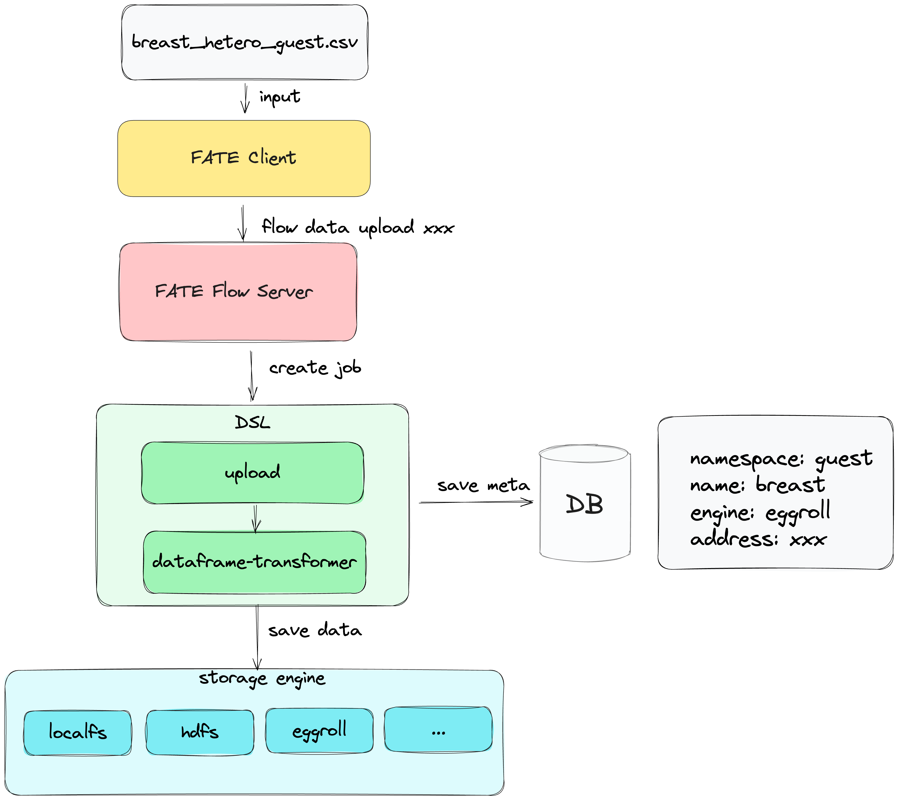

FATE数据接入指南¶
1. 上传流程¶
数据上传的流程图如下：
 - 客户端将数据上传到服务端； - 服务端将上传参数封装成DAG作业配置, 配置中包含两个组件, 即upload和dataframe-transformer，并调用submit接口提交作业； - upload组件将数据存储到fate存储服务中； - transformer组件将upload组件的数据输出转化成dataframe并存储到fate存储服务中； - 数据的meta信息存储到DB中.
2. 数据上传方式¶
注： fate提供的客户端包括SDK、CLI、Pipeline，若你的环境中没有部署FATE Client,可以使用pip install fate_client下载，以下的使用操作均基于cli编写。
2.1 上传场景说明¶
- 客户端、服务器分离：安装的客户端和服务器不在一台机器
- 客户端、服务器不分离：安装的客户端和服务器在同一台机器 两者区别：客户端不分离的场景，可以去掉上述流程中"客户端将数据上传到服务端"，以此提高大数据量场景下数据上传的效率。两种场景接口、参数有区别，可以选择对应的场景进行数据上传。
2.2 数据上传¶
2.2.1 配置及数据准备¶
- 上传配置位于examples-upload
{ "file": "examples/data/breast_hetero_guest.csv", "head": true, "partitions": 16, "extend_sid": true, "meta": { "delimiter": ",", "label_name": "y", "match_id_name": "id" }, "namespace": "experiment", "name": "breast_hetero_guest" } - file: 文件路径
- head: 数据是否携带header: true/false
- partitions: 数据存储分区数量
- extend_sid：是否需要生成sid列
- meta：数据的元信息
- namespace && name: 数据在fate的存储表引用
- 上传数据位于upload-data
- 你也可以使用自己的数据，并修改upload配置中的"meta"信息
2.2.2 上传数据命令¶
客户端-服务器不分离¶
flow data upload -c examples/upload/upload_guest.json
客户端-服务器分离¶
flow data upload-file -c examples/upload/upload_guest.json
2.2.3 上传结果¶
{
"code": 0,
"data": {
"name": "breast_hetero_guest",
"namespace": "experiment"
},
"job_id": "202312281606030428210",
"message": "success"
}
2.2.4 数据查询¶
因为整个上传为异步操作，需要确认是否上传成功才可进行后续操作。
flow table query --namespace experiment --name breast_hetero_guest
{
"code": 0,
"data": {
"count": 569,
"data_type": "dataframe",
"engine": "standalone",
"meta": {},
"name": "breast_hetero_guest",
"namespace": "experiment",
"path": "xxx",
"source": {
"component": "dataframe_transformer",
"output_artifact_key": "dataframe_output",
"output_index": null,
"party_task_id": "202312281606030428210_transformer_0_0_local_0",
"task_id": "202312281606030428210_transformer_0",
"task_name": "transformer_0"
}
},
"message": "success"
}
3. 数据绑定¶
对于特定的算法，可能需要特殊的数据集，FATE Flow提供data bind接口来将数据供FATE使用
flow table bind --namespace bind_data --name breast_hetero_guest --path /data/projects/fate/fate_flow/data/xxx
4. 数据查询¶
对于上传或者绑定的数据表，可以通过查询接口来获取数据的简略信息
flow table query --namespace experiment --name breast_hetero_guest
5. 数据清理¶
可以通过清理接口来清理已经存在FATE的数据表
flow table delete --namespace experiment --name breast_hetero_guest